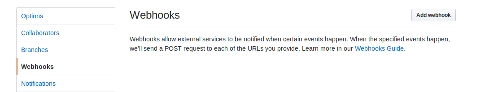
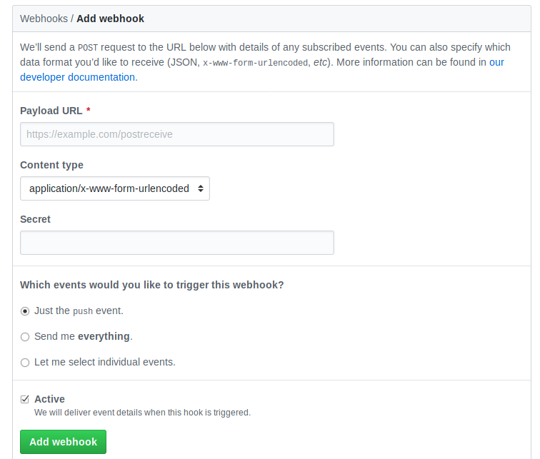
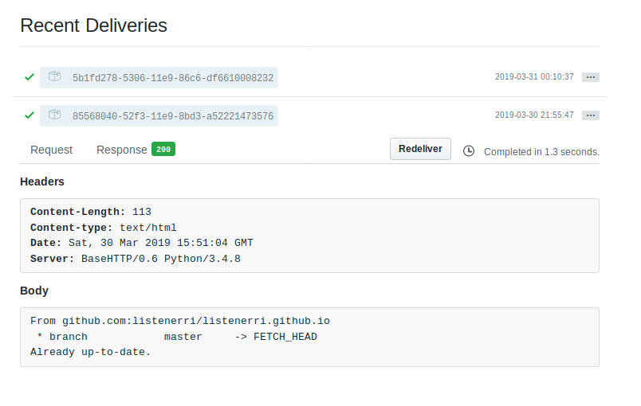

最近 coding 的 pages 服务越来越没法用了，不是自动部署失败就是博客无法访问，而且访问速度很慢，估计再过段时间 coding 就不再提供免费的 pages 服务了。但是如果将域名解析到 github 上，百度又无法抓取(github 不允许)，思来想去还是放在自己的服务器上吧。
不过放在自己的服务器上有两个问题：
- 没有备案不能使用 dnspod 的 301 重定向把 www 的域名重定向到顶级域名
- 博客更新后不能自动部署
我的博客是个基于 hexo 的静态博客，可以使用 nginx 来提供 web 服务，同时 nginx 可以配置根据域名来重定向，这样就解决了第一个问题，博客内容就使用 git 仓库，注意这个仓库不是 markdown 的原始文件，而是经过 hexo 根据生成后的 html 站点，如果之前在 github 上部署过，在 github 上的仓库的名字应该会是 <UserName>.github.io 或者在 coding 上部署过那仓库名则是 coding 下跟用户名相同的仓库。以后更新了博客依然推送到 github 或者 coding 上，在自己的服务器上 clone 下仓库，然后使用 github 或者 coding 的 webhooks 功能更新自己服务器上的仓库，这样就解决了自己服务器上的博客不能自动部署更新的问题。
下面的例子是基于 github 的，coding 的操作类似，不过鉴于 coding 提供的服务不太稳定的问题，建议博客仓库托管也不要放在 coding 上了。
克隆博客仓库到服务器上
这一步很简单，跟克隆普通 git 仓库一样，我把仓库放在了 /opt/hexo-blog 下，如果不放在这个路径下，那后面的内容中的相应路径也要修改。
以我在 github 下的博客仓库为例，注意执行命令的用户权限，后面的命令都假设服务器上的账户是 root：
1 | git clone git@github.com:listenerri/listenerri.github.io.git /opt/hexo-blog |
这里使用了 ssh 协议的仓库地址，这需要将服务器的 ssh public key 部署在自己的 github 账户中，如果不想部署使用 https 协议的地址也可以，不过可能会需要输入用户名和密码，这会影响到后面 python 脚本中的功能，建议还是用 ssh 协议的地址，部署个 key 又不麻烦。
安装配置 nginx
在服务器上安装配置 nginx，debian 系的 linux 系统中使用下面的命令就可以安装，其他系统可以在网上找找 ：
1 | apt install nginx |
安装之后不要急着启动 nginx 服务，要先配置下网站路径和域名相关的东西。
编辑 /etc/nginx/nginx.conf 文件，在 http 块中添加两个 server 块配置：
1 | http { |
第一个 server 块定义了主域名下的网站，也就是博客使用的域名和博客在服务器上的路径(上面克隆仓库时指定的地址)，第二个 server 块则是定义了将 www 的域名 301 重定向的顶级域名的网站下，我比较喜欢不带 www 的地址 :)
接下来启动 nginx 服务：
1 | service nginx start |
修改域名解析地址
上面 nginx 服务启动后就可以使用服务器的 ip 地址(这时还不能使用域名)进行访问了，如果测试没问题就可以修改域名的解析到这个服务器 ip 上了，这一步没什么好说的，就是把自己域名的 A 记录改成服务器的 ip 地址。
改完之后过一会儿使用 dig 命令查看域名是否已经解析到服务器的地址了，如果解析已经生效了就可以访问域名来测试博客是否可以正常访问了。
注意把 www 的域名也解析到服务器 ip 地址上。
启动 github webhooks
在服务器上把下面的代码保存到一个 py 文件中，假设文件路径为 /opt/webhooks.py：
1 | #!/usr/bin/env python3 |
脚本的内容就是启动了一个监听 2345 端口的 http 服务，只接受 /pushed 资源路径的 POST 访问，其他资源路径的 POST 访问全都返回 403，每次接收到正确的 POST 访问后就去 /opt/hexo-blog 路径下更新仓库，也就是从 github 远程仓库下拉取更新，如果更新成功返回 200 状态码，否则返回 500，如果更新失败则打印下命令的输出，以便以后根据日志文件定位问题。
接下来给这个脚本增加可执行权限：
1 | chmod a+x /opt/webhooks.py |
启动脚本同时把脚本的输出追加到 /var/log/blog-github-webhooks.log 文件中：
1 | nohup /opt/webhooks.py >> /var/log/blog-github-webhooks.log 2>&1 & |
然后配置下这个脚本开机自启动，如果是 systemd 的系统就写一个 service 文件，将上述命令稍微修改下写入 service 文件中的 EXEC 字段后面，具体的 service 文件怎么写和怎么用可以在网上搜索下：
1 | /opt/webhooks.py >> /var/log/blog-github-webhooks.log 2>&1 |
如果不是 systemd 的系统就把上面的命令复制到 /etc/rc.local 文件中的最后一行，不过 systemd 好像也兼容 /etc/rc.local 文件，直接用第二种方法配置开机自启估计也行。
设置 github webhooks
去 github 网站博客对应的项目页面下，点击 Settings 按钮，再点击新页面左侧导航栏的 Webhooks 按钮：

再点击上图右上角的 Add Webhook 按钮：

在上图 Payload URL 的输入框中填入自己的服务器 ip 或者域名并加上端口 2345 和资源路径 /pushed，例如：
1 | http://listenerri.com:2345/pushed |
然后直接点击下面绿色的 Add webhook 按钮就行了。
github 会发送一个测试的 POST 请求到设置的地址中，点击刚刚添加的 webhook 可以进入这个 webhook 的设置界面，这个界面最下面会后这个 webhook 的最近活动，如果没有意外会有如下图中的带有绿色对勾的一条记录：

当然可以写一遍新博客测试下。